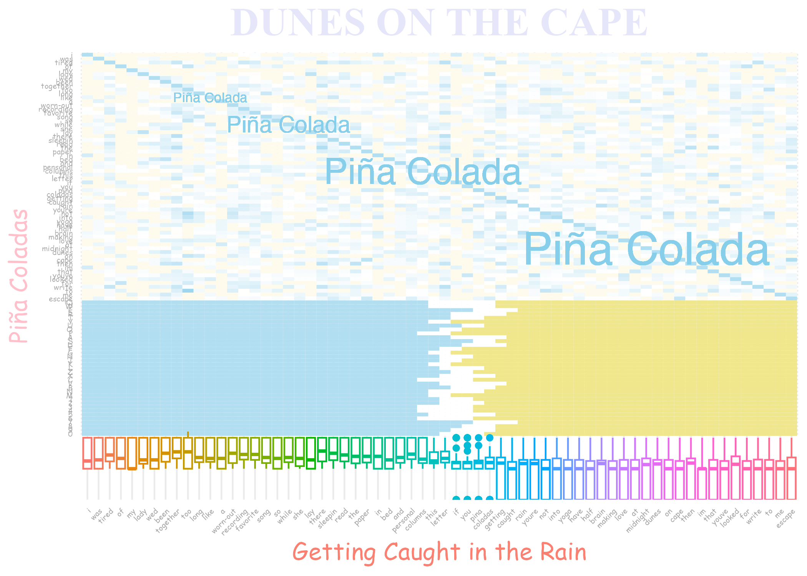
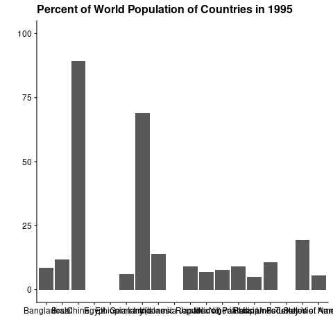

library(tidyverse)library(palmerpenguins)library(cowplot)penguins <-drop_na(penguins)ggplot(penguins,aes(x =log2(bill_depth_mm),y = flipper_length_mm/log2(bill_length_mm),shape = (species))) +geom_point(aes(color = body_mass_g/333), size =8) +scale_color_gradient2(low ="magenta", mid ="yellow", high ="chartreuse4", midpoint =14) +facet_grid(~ year) +theme_minimal_grid() +labs(title ="Fun penguin facts - by year (as inspired by a watermelon)",x ="thick beak with log2?",y ="long flipper/long bill? if long bill still long when log2",caption ="Wut do u mean these data mean nothing to you?" ) +#Ugly theme inspired by Yunus Ozekintheme(axis.text.x =element_text(face ="bold.italic", color ="#993333", size =29, angle =330), axis.text.y =element_text(face ="bold", color ="orange", size =23, angle =186), plot.background =element_rect(fill ="chartreuse4"), plot.title =element_text(face ="bold", color ="chartreuse", size =65, angle =1),panel.background =element_rect(fill ="brown1"), panel.grid.major.y =element_line(color ="chartreuse1", linetype ="dotdash", linewidth =1.2), panel.grid.major.x =element_line(color ="magenta3", linewidth =3, linetype ="twodash"), axis.title.x =element_text(face ="italic", size =37, color ="purple4", angle =12), axis.title.y =element_text(face ="bold", color ="yellow3", angle =273, size =28),plot.caption =element_text(size =33, color ="brown3", angle =4))
Plot 9
Code
library(tidyverse)library(ggplot2)lyrics <-c("I was tired of my lady wed been together too long Like a worn-out recording of a favorite song So while she lay there sleepin I read the paper in bed And in the personal columns there was this letter I read If you like Pina Coladas and getting caught in the rain If youre not into yoga if you have half a brain If you like making love at midnight in the dunes on the cape Then Im the love that youve looked for write to me and escape")# Process lyrics into vectorlyrics <- lyrics %>%tolower() %>%str_split(pattern =" ") %>%unlist() %>%unique()# Create tibblecolada_tbl <-tibble(song_lyrics_1 = lyrics)# Add values for similarity of each given word in the song to each other given wordfor (num_x in1:length(lyrics)){ new_vector <-c()for (num_y in1:length(lyrics)){ characters_1 <-str_split(lyrics[num_x], "")[[1]] characters_2 <-str_split(lyrics[num_y], "")[[1]] similarity <-sum(characters_1 %in% characters_2)/((length(characters_1)+length(characters_2))/2) new_vector <-c(new_vector,similarity)} colada_tbl[lyrics[num_x]] <- new_vector}# Function to add an beach sceneocean <-function(tbl,disp_word){ disp_word <-unlist(str_split(disp_word,pattern =""))for (i in1:length(disp_word)){ sea <-sample(30:35,1) foam <-sample(2:6,1) sand <-64- sea - foam tbl <- tbl %>%rbind(c(disp_word[i],rep(1, sea), rep(0.2, foam), rep(-1, sand))) }return(tbl)}# Add in a beach scene with some random row namescolada_tbl <-ocean(colada_tbl,'QWERTYUOPASDFGHJKLZXCVBNM1234567890')# Make into long tblcolada_long <-pivot_longer(colada_tbl, cols = lyrics,names_to ="song_lyrics_2", values_to ="Similarity")# Order tibble correctly for visualizationcolada_long$song_lyrics_1 <-factor(colada_long$song_lyrics_1, levels =c(rev(unlist(str_split('QWERTYUOPASDFGHJKLZXCVBNM1234567890',pattern=""))),rev(lyrics)))colada_long$song_lyrics_2 <-factor(colada_long$song_lyrics_2, levels = lyrics)# Make similarity values numericcolada_long$Similarity <-as.numeric(colada_long$Similarity)# Plot the Pi<c3><b1>a Colada Artggplot(colada_long, aes(x = song_lyrics_2, y = song_lyrics_1)) +geom_tile(aes(fill = Similarity)) +# Fill based on word similarity valuestheme_minimal() +theme(axis.text.x =element_text(angle =45, hjust =1, # Font, color, size, and orientation of axis labelscolor ='darkgrey',family ="Comic Sans MS"),axis.text.y =element_text(angle =0, hjust =1, color ='darkgrey',family ="Comic Sans MS")) +scale_fill_gradient2(low ="#F0E68C", high ="skyblue", mid ="white", midpoint =0.2) +# Add scale of heatmapgeom_boxplot(aes(x = song_lyrics_2, y = Similarity*8-8, color = song_lyrics_2)) +# Add rainbow boxplotsscale_color_discrete() +theme(legend.position ="none") +# Remove legendtheme(text =element_text(size =6)) +labs(title ="DUNES ON THE CAPE", # Add title and axis labelsx='Getting Caught in the Rain', y ='Pi<c3><b1>a Coladas') +theme(plot.title =element_text(size =25,family ="Times New Roman",color='lavender', face ='bold', hjust =0.5),axis.title.x =element_text(size =15,family ="Comic Sans MS",color='salmon'),axis.title.y =element_text(size =15,family ="Comic Sans MS",color='pink')) +# Add in "Margaritaville" textgeom_text(aes(x ='like', y ='like', label ='Pi<c3><b1>a Colada'),size =3, color ='skyblue') +geom_text(aes(x ='while', y ='while', label ='Pi<c3><b1>a Colada'),size =5, color ='skyblue') +geom_text(aes(x ='columns', y ='columns', label ='Pi<c3><b1>a Colada'),size =8, color ='skyblue') +geom_text(aes(x ='midnight', y ='midnight', label ='Pi<c3><b1>a Colada'),size =10, color ='skyblue')

Plot 10
Code
library(tidyverse)library(gganimate)library(gifski)library(cowplot)#Plot stacked columns with lengths as percent of world population per year# Pipe that assigns output as df and starts with the world population datasetdf <- population |>mutate(percent_population=(population/max(population)*100)) |>filter(percent_population>5) |>arrange(population)p <-ggplot(data=df) +geom_col(aes(country, percent_population)) +labs(title ='Percent of World Population of Countries in {frame_time}', x='', y='') +theme_cowplot() +transition_time(as.integer(year)) +ease_aes('linear') # Animate graphs and save animationsuppressWarnings(animate(p, renderer=gifski_renderer(), file_renderer="data/out/animation"))anim_save("data/out/animation/gg_anim_wc.gif")

Plot 11
Code
library(tidyverse)library(gapminder)ggplot( gapminder,aes(x = lifeExp,y = gdpPercap,color = year,shape = continent,size = pop )) +geom_jitter(color ="#edfd07", fill ="white", size =10,alpha =0.2 ) +scale_x_log10() +scale_y_sqrt() +labs(x ="When die?",y ="$$$$$$$$$$$$$$$$$$$$$$$$$$$$$$$$$$$$$$$$$$$$$$$$$$$$$$$",title ="money made x age", ) +scale_x_discrete(position ="top") +theme(axis.text.x =element_text(face ="bold.italic", color ="purple", size =18, angle =180), axis.text.y =element_text(face ="italic", color ="white", size =12, angle =90), plot.title =element_text(face ="bold.italic", color ="#6ef710", size =15, angle =90), axis.title.x =element_text(size =10, color ="pink", angle =270), axis.title.y =element_text(color ="white", angle =120, size =20),plot.background =element_rect(fill ="#10f7ed"), legend.background =element_rect(fill ="#6ef710"), legend.title =element_text(angle =95, face ="italic", color ="#edfd07", size =7), legend.key =element_rect(color ="magenta", fill ="#10f7ed"), legend.text =element_text(color ="#10f7ed", size =8), panel.background =element_rect(fill ="magenta"), legend.position ="right",panel.grid =element_blank() )